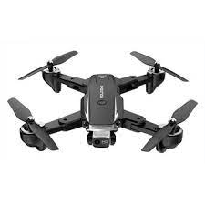
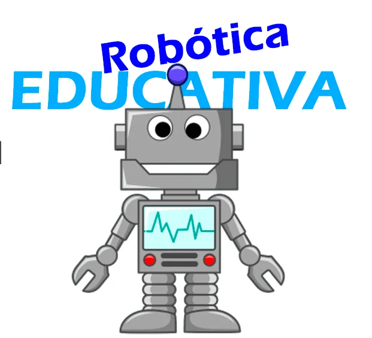
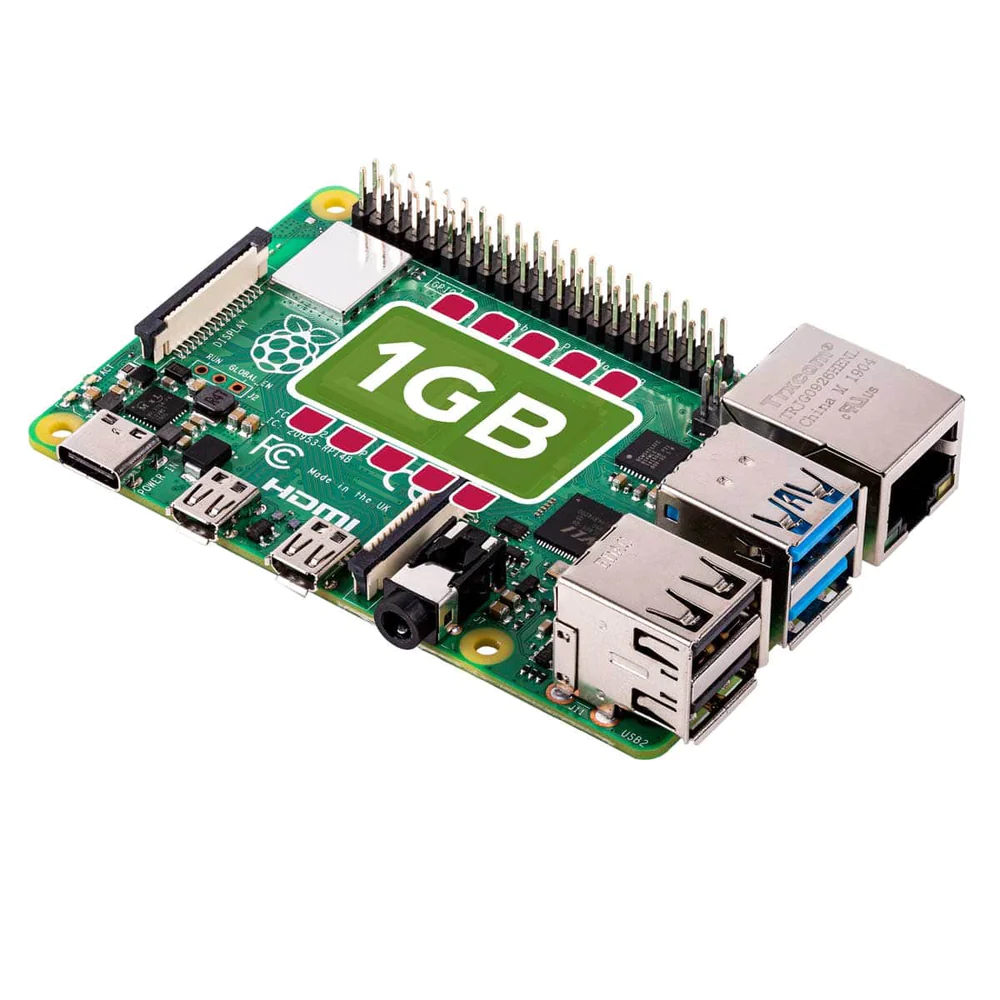

La nueva tecnología
Drones

Un dron es un vehículo aéreo no tripulado, es decir, que es un tipo de aeronave que es capaz de
desplazarse por el aire sin que haya un piloto a bordo. Pueden ser controlados de manera remota,
o
por medio de programación específica mediante software y GPS para que operen de forma autónoma.
Robótica

La robótica es una ciencia que aglutina varias ramas tecnológicas: la rama de la ingeniería
mecánica,
de la ingeniería electrónica y de las ciencias de la computación, ocupándose del diseño,
construcción, operación, estructura, manufactura y aplicación de los robots
Raspberry

La Raspberry Pi es una serie de ordenadores monoplaca u ordenadores de placa simple de bajo costo
desarrollado en el Reino Unido por la Raspberry Pi Foundation, con el objetivo de poner en manos
de
las personas de todo el mundo el poder de la informática y la creación digital.